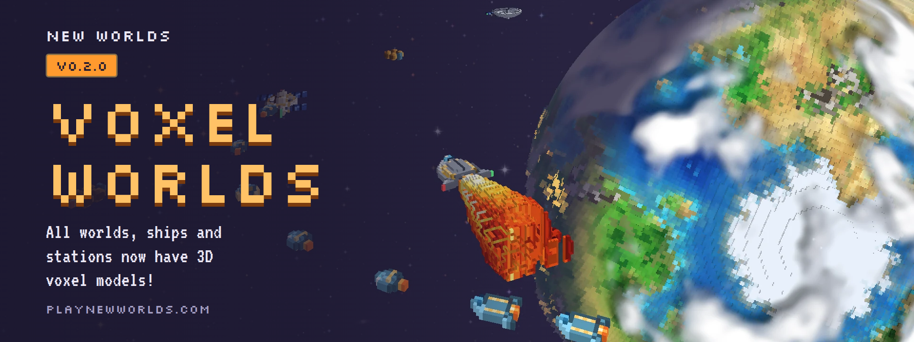

NPCs and Player Factions can now set their Tax and Tariff rates between 0 and 20%.
Taxes increase Income from Pops at the cost of their Loyalty and Happiness, with effects on Migration to and from each Location.
Tariffs increase profit on Trade but reduce incoming Freight.
NPC Factions review their own Tax and Tariff rates every decade.
Detailed Income breakdown in each Faction's tab.
Total Faction Population affects Loyalty more gradually as a Faction grows.
Worlds
Better Icon Cards for Settlements, Buildings, Terraforming and World Traits.
Megacity tier at Settlement Level 8, between Metropolis and Megalopolis.
Yellow Dwarf Trait for Aurea and Blue Giant Trait for Candor.
Food is ten times more dense, and the Hydroponics Building produces Food resources.
Increased Migration rates to empty worlds.
The Spaceport Building has been renamed the Market.
Missions
The Mission Planner's Map button now shows your full route.
Improved Mission Auto-Tracking logic to consider future capacity.
Failed Missions offload their cargo and passengers when you Recover.
Speedrun Integrations
New Speedrun Mode to time your runs with LiveSplit.
Categories: All Tutorials, each Mission Tier, Solus Grand Tour, All Terra Locations, Found Faction and 1B Faction Pops.
Tutorials
New Camera tutorial steps for cycling camera modes and tilting the view.
Improved tutorial text box style and instructions.
Other
Optimized future trajectory calculation while coasting.
Future trajectory is calculated on a separate thread, coasting and thrusting, on desktop and Android.
Yearly Freight between Markets is calculated on a separate thread on desktop and Android.
Tab goes to your Tracked Target first, and Home returns the camera to your ship.
Flight paths are dotted when passing behind a world.
Ship stat cards and better Ship descriptions.
Clearer tooltips, Building, Shipyard and Construction text throughout, and hangar space shown in tonnes and bays.
Clip button: record a short clip of your flight in the browser and share it.
Tutorials and Roads v0.2.6
Tutorials
The mass tutorial races a ghost of your ship.
Tutorial steps flash the button they prompt you to press.
Changes
Improved road Planning mode performance.
Improved continuity across SOI boundaries.
Maps and Traffic v0.2.5
Maps
Full screen surface map mode.
Surface Travel prompt showing distance and time remaining.
Worlds and ships
Traffic ships fly elliptical orbits.
Flight paths draw as solid 3D tubes over worlds.
Buildings can be placed on ice texels.
Launch facilities are built near the equator and on a west coast where possible.
itch.io codes
Unlock the full game with an itch.io purchase: paste your download link in Settings > Profile.
Other
Reduce memory usage.
Phone rotation improvements.
A save changed on another device replaces the older copy.
Geosync World-Nets v0.2.4
Gameplay
World-Net stations sit at true geosync on every eligible world: Terra, Ares, Glacius, Serena, Palus, Arida and Lutum.
Ares Ore Dump now sits in geosync orbit.
Maps
Full screen surface map mode.
Improved map zoom performance.
Other
Trajectories no longer draw through your ship.
Online profanity filter.
Ships can now be renamed.
Profiles v0.2.3
Changes
New Profile page in Settings: cloud saves, your account, invite and link codes, and your devices.
Use your account on up to five devices, and sign out any of them from the Profile page.
Star icons match the star sprites.
Unlock Codes v0.2.2
Changes
Unlock the full game in the browser with an invite code! If you want to playtest the New Worlds closed-alpha, please enquire at hello@computerise.games.
Fixed traffic ship sizing.
Axial Tilt and Rotation v0.2.1
Worlds
Every world spins at a unique speed and angle.
Many moons and planets are tidally locked.
Gas giants have voxel rings.
Other changes
Improved performance of the dynamic star surfaces.
Improved World and Faction icons.
Tooltips are locked over their target in 3D camera modes.
Voxel Worlds v0.2.0

Voxel worlds
Planets are voxels up close, with their spin, day and night, city lights and clouds. Turn it off in Settings > Display.
Ships and stations are voxel models too, including nearby traffic and stations on the solar map.
Launches and landings
Booster launches fly a real ascent on voxel booster stages sized to your ship.
Parachutes are voxel domes.
Bigger ships cost more to launch.
Other changes
Mass bar segments flash red when there's no space left for mission cargo.
Cinematic mode hides orbit markers, and closest approach is now orange.
Controller: tap R3 to snap back to the top-down view.
Web Demo v0.3.0
Plays in the browser, on desktop and mobile. No download needed.